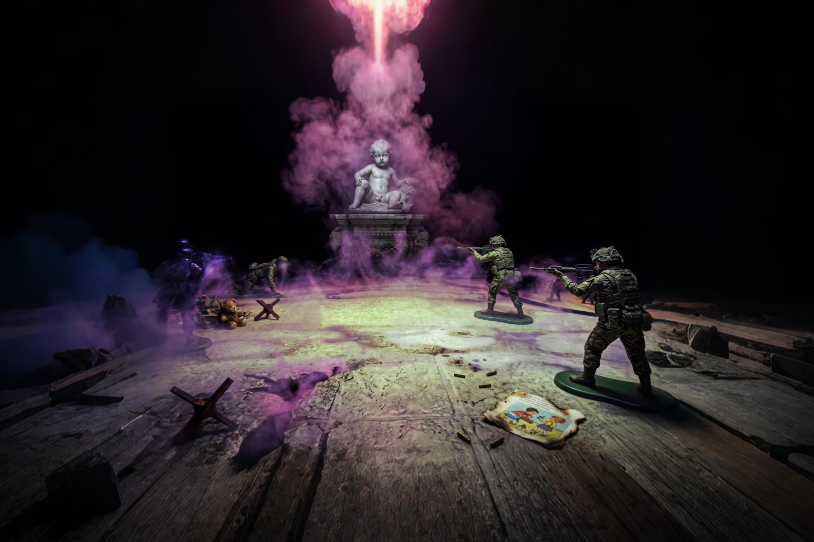
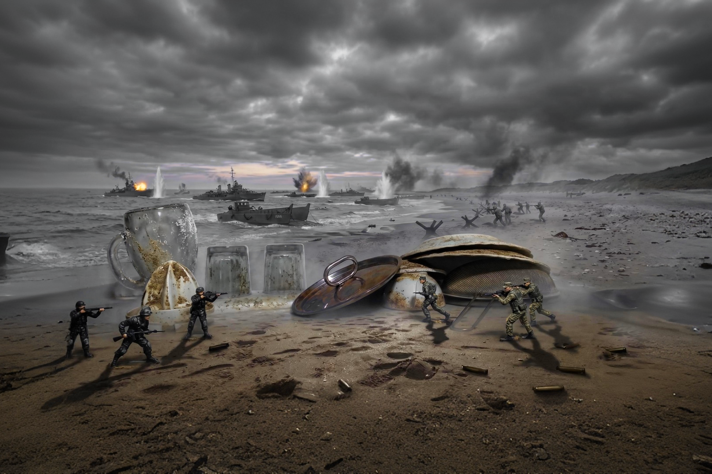

01 — Il Concept
L'Irruzione del Reale
La guerra irrompe nella realtà spezzando il respiro. La consapevolezza di ciò che accade nel mondo ci riempie di impossibilità e nostalgia. Per questo progetto, ho disposto dei soldatini di plastica in spazi domestici.


Realtà Domestica

Visione Estrapolata
Lotto 01 · 04 / Serie
Lui Osserva
"Mi sono svegliato in una camera piena di fumo; l'unica cosa che potevo fare era combattere. Un'enorme fotografia di un diabolico bambino vegliava su di noi e ci guardava come se fossimo giocattoli. Ma noi eravamo altro. Sono già morto mille volte, non ricordo più il volto di chi ero."

Realtà Domestica

Visione Estrapolata
Lotto 02 · 05 / Serie
Freddo e Fuoco
"Il tavolo era freddo, le pareti congelate. Le sfere arancioni sul tavolo avevano inneggiato al nuovo scontro. Lontano, la mia città prendeva fuoco. Non riuscivo più a distinguere le mie mani dal mio fucile. Un odore di arancia bruciata."
Realtà Domestica

Visione Estrapolata
Lotto 03 · 06 / Serie
Sbarco Stoviglie
"Questa guerra serve per spezzare la tirannia della 'mano rugosa' che dal cielo lava le nostre case. Noi viviamo nelle stoviglie, e ogni giorno i nostri ricordi vengono cancellati. Vogliamo solo la stabilità."
Realtà Domestica

Visione Estrapolata
Lotto 05 · 08 / Serie
Maschera Mangiasogni
"Siamo alla ricerca di una maschera. Sappiamo che saremo divorati, ma forse, nella prossima vita, potremmo raccontare a chi verrà cosa celano le fauci della maschera mangiasogni."

Realtà Domestica

Visione Estrapolata
Lotto 07 · 10 / Serie
Ignoto tra la Nebbia
"La nostra spedizione deve entrare nell'ignoto di nebbia. Devo trovare il mio amico scomparso, e forse dietro questa nebbia ci sarà il mio futuro. Che la fantasia mi aiuti."
05 — L'Installazione Fisica
.png)
05 — L'Installazione Fisica
.png)
05 — L'Installazione Fisica
.png)